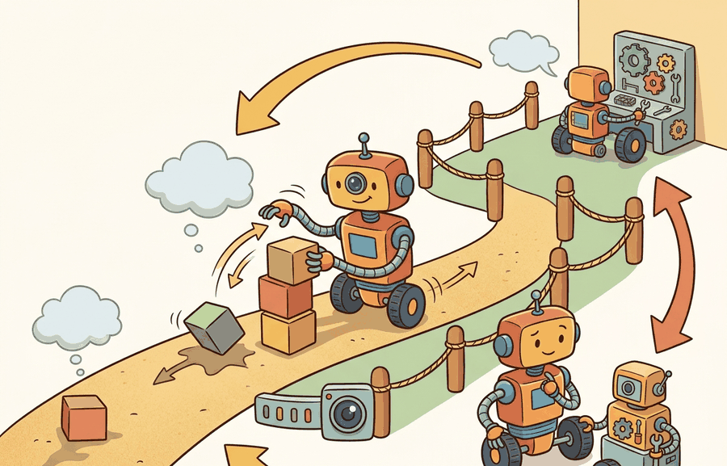

For Failure recovery, security, maintenance, deployment quality is measured by the command stream, safety monitor state, and replayable evidence behind each command.
A Careful Control Loop

Failure recovery, security, maintenance matters because long-lived robots need recovery plans, security boundaries, and maintenance loops. The section treats evaluation, uncertainty, safety, and deployment as one closed-loop contract rather than as separate checklist items.
Problem First
Deployment does not end after first success. Robots age, networks change, credentials expire, sensors drift, and adversarial inputs can target physical behavior.
The practical question is therefore specific: which observation arrives, which state estimate is trusted, which action is allowed, which monitor can interrupt it, and which artifact proves the claim afterward?
Every compared number in this section should be co-computed by one script on one task panel, with one seed plan and one saved artifact. That artifact carries success, failure, latency, safety, and robustness fields together.
Theory
Failure recovery and security should be modeled as reachable states of the deployed system, not as prose commitments in a launch checklist. If a sensor drops, a battery browns out, or a signing key expires, the architecture must define what the robot does next and who may authorize recovery.
A simple recovery model is a guarded state machine with modes $\{\text{nominal}, \text{degraded}, \text{recovery}, \text{safe stop}\}$. Security adds trust predicates over software origin, credential validity, and command authority. Maintenance adds slow-changing state such as battery health, encoder drift, and calibration age.
The mechanism is observe, estimate, choose, constrain, execute, monitor, log, and review. Each verb has an owner in the deployment architecture and a field in the evaluation artifact.
Worked Example
A delivery robot facing a blocked wheel and an expired service certificate needs two different recovery paths. One is physical and may require stopping or replanning. The other is cyber-physical and may require rejecting remote commands while preserving a local safe-stop channel.
recoverable_failures = [
{"event": "wheel_slip", "recovered": True},
{"event": "camera_drop", "recovered": True},
{"event": "expired_certificate", "recovered": False},
{"event": "stuck_lift", "recovered": False},
]
rate = sum(x["recovered"] for x in recoverable_failures) / len(recoverable_failures)
report = {
"section": "55.5",
"recovery_success_rate": rate,
"requires_secure_maintenance_window": ["expired_certificate"],
"requires_operator_repair": ["stuck_lift"],
}
print(report){'section': '55.5', 'recovery_success_rate': 0.5, 'requires_secure_maintenance_window': ['expired_certificate'], 'requires_operator_repair': ['stuck_lift']}The expected output should split faults by the type of authority required to resolve them. That distinction matters operationally because a robot should not improvise its way through a security fault the same way it handles a temporary perception drop.
- Detect the fault and classify it as runtime, security, or hardware-maintenance related.
- Enter degraded mode if safe motion is still possible, otherwise safe stop.
- Attempt only preauthorized recovery actions with bounded retries.
- Escalate certificate, signing, or command-authority failures to a secure maintenance window.
- Record mean time to recovery, operator load, and unresolved-fault backlog.
The hand-built record is about 24 lines. In a production run, DVC, MLflow, Weights and Biases Artifacts, or a ROS 2 bag plus metadata file reduces the tracking code to a few calls while handling versioning, file storage, run ids, and reproducible retrieval. The hand-built version remains useful because it shows which fields the tool must preserve.
Practical Recipe
- Write the observation, action, monitor, metric, and artifact fields before selecting a model.
- Run a deterministic smoke test and one named perturbation from the panel.
- Log success, safety events, latency, energy or resource use, and recovery status in the same row group.
- Compare only methods evaluated by the same script on the same panel and seed plan.
- Attach a short postmortem to each failed rollout so the artifact remains useful after the plot is forgotten.
Treating maintenance and security as separate from safety is a category error. A compromised command channel and a worn actuator both change the physical action the robot can execute safely.
An embodied AI team applying Failure recovery, security, maintenance should review a single run folder containing configuration, model version, rollout traces, monitor transitions, video or sensor replay, and the metric table. The review asks whether the evidence supports the deployment decision, not whether one isolated number looks good.
Fleet robotics is pushing embodied AI toward security-by-design, operational resilience, and maintenance-aware learning rather than single-demo performance.
Can you name the metric contract, perturbation panel, monitor state, and artifact id for Failure recovery, security, maintenance? If any field is missing, the claim is not yet audit-ready.
Failure recovery, security, maintenance becomes operational when the metric is tied to a runtime interface. The interface names the sensor stream, state estimate, action representation, timing budget, safety or robustness monitor, and deployment artifact.
The disciplined habit is to separate three claims. The conceptual claim explains why the method should help. The systems claim explains which interface it changes. The evidence claim records which measurement would convince a skeptical builder.
| Tool or Library | Role in Failure recovery, security, maintenance |
|---|---|
| secure boot and signed updates | Limit which software can control the robot. |
| watchdogs | Restart or stop components that miss health checks. |
| maintenance logs | Track hardware drift, repairs, and recurring failure causes. |
Cross-References
For Failure recovery, security, maintenance, connect benchmark design, sim-to-real transfer, uncertainty, and safety barriers through the deployment artifact that will be checked before release.
Create a JSON or Parquet artifact for five rollouts of Failure recovery, security, maintenance. Include fields for configuration, seed, perturbation, metric values, monitor state, and a short failure label. Then rerun the same panel with one changed policy setting and verify that both methods can be compared row by row.
When resilience fails, classify the incident as runtime fault, cyber trust failure, hardware degradation, or procedure failure. Then inspect whether the system entered the correct mode and whether the artifact preserved enough evidence to improve the next maintenance cycle.
For Failure recovery, security, maintenance, schema strictness is cheaper than discovering a missing field during a moving-robot trial; require the log before comparing outcomes.
Failure recovery, security, maintenance is valuable when it changes the closed-loop decision and leaves behind evidence that another builder can audit.
Design a same-artifact evaluation for this section. Specify the environment, rollout panel, seed plan, metric fields, monitor fields, one perturbation, and one rollback or recovery rule.
Section References
Quigley, M. et al. ROS: an open-source Robot Operating System. ICRA Workshop, 2009.
Use for the robotics middleware lineage behind nodes, topics, services, bags, and deployment boundaries.
OpenTelemetry project documentation. https://opentelemetry.io/docs/
Use for tracing, metrics, and logs when robot deployment evidence must connect software events to runtime behavior.
After Failure recovery, security, maintenance, the next section should reuse the artifact schema while changing one deployment interface or failure mode, so comparisons remain auditable.